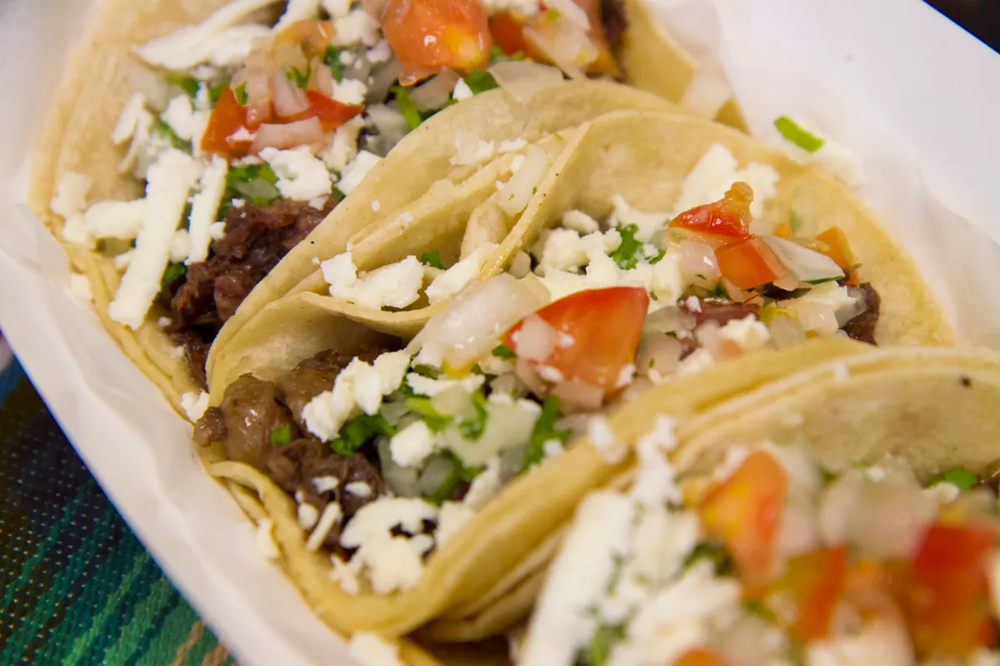

Tacos

Tacos are a Mexican food dish where you put meat in a tortilla that taste delicous.
Ingredients
- Tortilla
- Ground Beef
- Taco seasoning
- cheese
- toppings of your choice
Steps
- Cook the ground beef
- Put taco seasoning in when meat is brown
- Stir unitl taco seasoning is fully incorpated
- Put the cooked meat into a folded tortilla
- put cheese ontop of the meat in the tortilla
- Add toppings of your choice